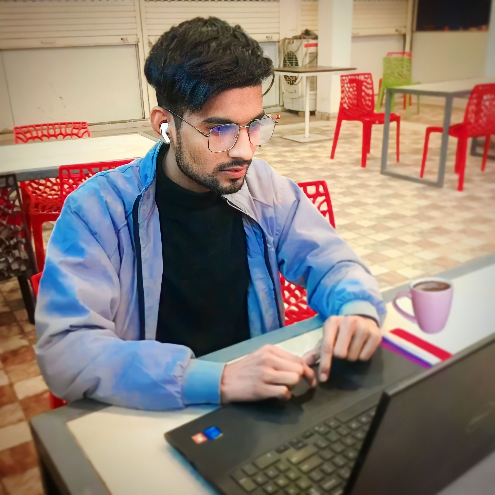

The sting of inflation may have you pondering how to make some extra income If you have the time and energy, you can put your skills and passions to work with a side hustle.
NerdWallet rounded up 25 real ways to make money at home,
online
or out and about. For each potential side job, we list details like what it takes to get started, age requirements and how fast you can get paid. While most people want to make money fast, don’t discount the “slow” gigs, as they may pay more in the long run.
It’s free, No registration fee is required. cInstant account setup. Daily task vishan up to 100 copy-paste work. $0.20 per copy-paste work. Dedicated premium support. Daily payment withdrawal at minimum $5.
WebLooking for online business ideas that are within your reach? This article lists 36 small online business ideas that you can start in 2024, from t-shirt shop to SEO expert, with money-making potential and low startup costs. Learn how to start an online business with
Rajasthan Berojgari Bhatta 2023 राजस्थान बेरोजगारी भत्ता घर बैठे प्राप्त करें 4500 रुपये, यहां देखें संपूर्ण जानकारी: Rajasthan berojgari bhatta rajasthan apply online registration 2023 राजस्थान सरकार द्वारा बेरोजगार युवक और युवतियों के लिए Rajasthan Berojgari Bhatta 2023 योजना शुरू की है. राजस्थान सरकार द्वारा राज्य के बेरोजगार युवाओं को Rajasthan Berojgari Bhatta 2023 योजना से आर्थिक सहायता प्रदान की जाएगी. पिछली सरकार में यह योजना अक्षत योजना के नाम से चल रही थी. जिसमें सिर्फ 600 से ₹750 तक भत्ता मिलता था. लेकिन अब कांग्रेस सरकार ने इसे बढ़ाकर ₹4000 से ₹4500 तक कर दिया है. यानी राज्य सरकार ने पिछले साल Rajasthan Berojgari Bhatta 2023 को करीब 5 गुना बढ़ा दिया था. यहां हम Rajasthan Berojgari Bhatta 2023 से संबंधित पूरी जानकारी स्टेप बाय स्टेप आपको दे रहे हैं.
Love marriage, which is the union of two individuals who have chosen to marry each other based on their mutual feelings of love and attraction, has become an increasingly prevalent form of marriage across the world. While it represents a significant shift away from traditional arranged marriages, which are still practiced in many cultures, love marriage is not without its challenges and criticisms.
Born and raised in a Hindu family in coastal Gujarat, Gandhi trained in the law at the Inner Temple in London, and was called to the bar in June 1891, at the age of 22. After two uncertain years in India, where he was unable to start a successful law practice, he moved to South Africa in 1893 to represent an Indian merchant in a lawsuit. He went on to live in South Africa for 21 years. There, Gandhi raised a family and first employed nonviolent resistance in a campaign for civil rights. In 1915, aged 45, he returned to India and soon set about organising peasants, farmers, and urban labourers to protest against discrimination and excessive land-tax.
अटल बिहारी वाजपेयी ( हिंदी उच्चारण: [əʈəl bɪɦaːɾiː ʋaːdʒpai] ; 25 दिसंबर 1924 - 16 अगस्त 2018) एक भारतीय राजनीतिज्ञ और कवि थे, जिन्होंने भारत के 10वें प्रधान मंत्री के रूप में तीन बार सेवा की , पहली बार 1996 में 13 दिनों की अवधि के लिए, फिर 1998 से 1999 तक 13 महीने की अवधि के लिए, उसके बाद 1999 से 2004 तक पूर्ण कार्यकाल के लिए । [1] वह कार्यालय में पूर्ण कार्यकाल तक सेवा करने वाले पहले गैर- भारतीय राष्ट्रीय कांग्रेस प्रधान मंत्री थे। वाजपेयी भारतीय जनता पार्टी के सह-संस्थापकों में से एक और वरिष्ठ नेता थे । वह एक हिंदू राष्ट्रवादी स्वयंसेवी संगठन , आरएसएस के सदस्य थे । वह एक हिंदी कवि और लेखक भी थे
born 17 September 1950)[b] is an Indian politician who has served as the 14th prime minister of India since May 2014. Modi was the chief minister of Gujarat from 2001 to 2014 and is the Member of Parliament (MP) for Varanasi. He is a member of the Bharatiya Janata Party (BJP) and of the Rashtriya Swayamsevak Sangh (RSS), a right wing Hindu nationalist paramilitary volunteer organisation. He is the longest-serving prime minister from outside the Indian National Congress.
Kohli, with his 48 ODI hundreds, is on the cusp of emulating his idol Sachin Tendulkar's long-standing record of 49 centuries. According to reports, the cricketer is among the world's 100 richest sportspersons with a whopping net worth of over ₹1,000 crore.
apni girlfrind or apne dosto ke liye sbse best cafe hai . aankh band karke laao or enjoy karo
